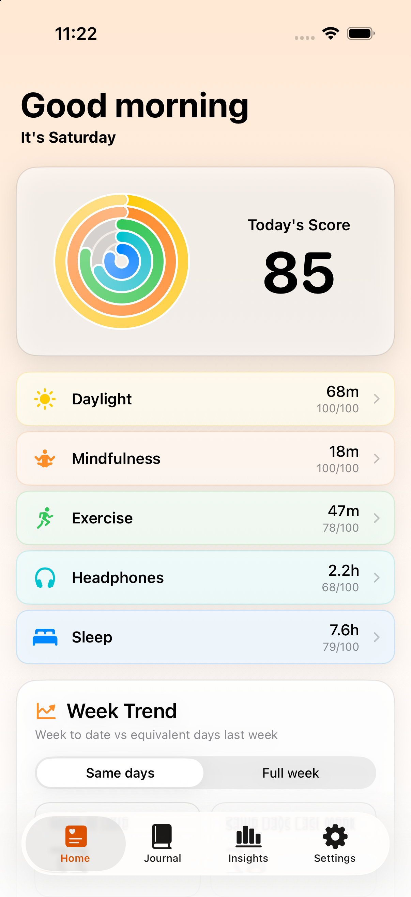
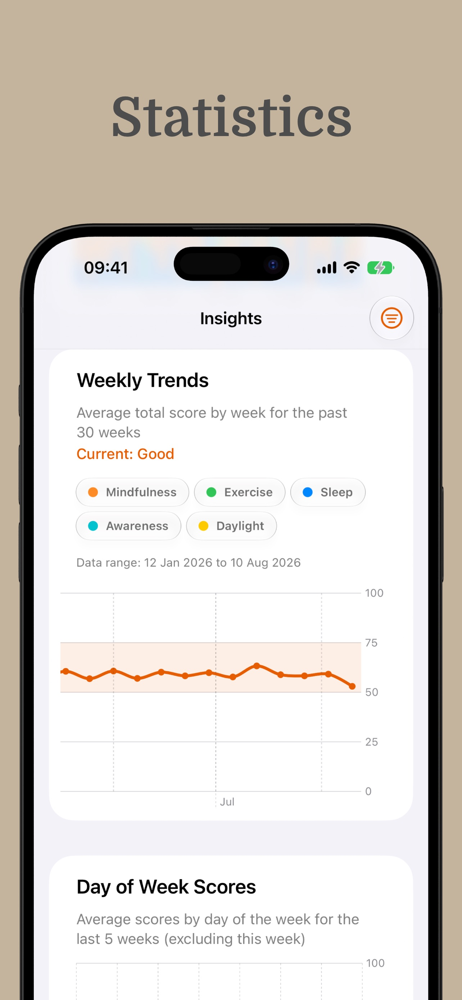
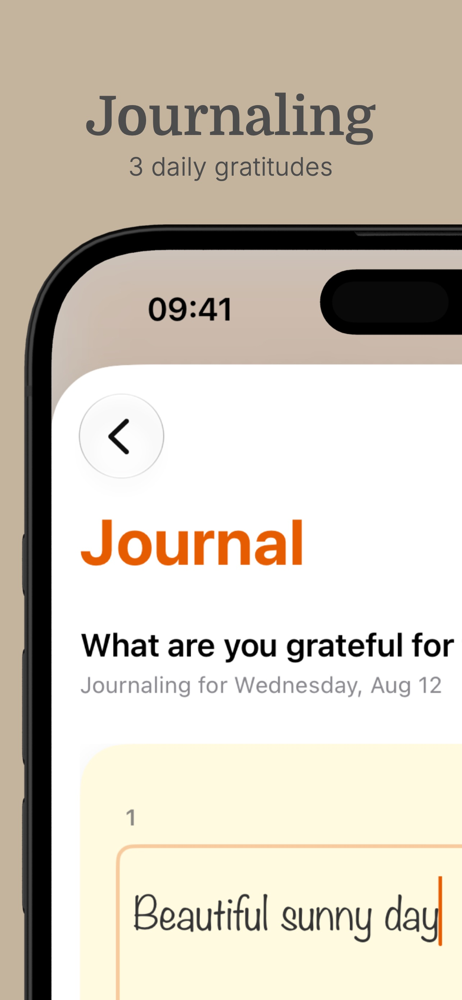

Daylight
See time spent in natural light and work toward a daily target.
Apple Fitness-style rings for mental wellbeing
Full Circle gently nudges you toward daylight, mindfulness, movement, quieter listening and better sleep—small actions that may help you feel better over time.
Automatic where it matters
Like Apple Fitness rings for physical activity, Full Circle makes supportive mental-wellbeing habits visible and motivating—using Apple Health and the devices you already carry.
See time spent in natural light and work toward a daily target.
Bring mindful minutes from Apple Health into your daily picture.
Connect movement with the way you report feeling over time.
Notice your listening habits and make room for quieter moments.
Keep nighttime sleep and naps alongside the rest of your day.
You choose what to share. Full Circle reads relevant activity data only after you grant permission in Apple Health.

From data to self-awareness
A short evening check-in gives your activity data context. Over time, Full Circle helps you notice which small actions tend to show up on your better days—and gently encourages you to do more of what seems to help.
Choose realistic daily goals for each ring and adjust them as your routine changes.
Give the day a simple score, add influences and keep a record without writing an essay.
Explore trends and correlations between your tracked activities and reported mood.
A thoughtful end to the day
Capture three positive moments, add your mood and look back on the week with a concise reflection. The goal is perspective—not another task to perfect.


Made for the Apple ecosystem
Bring supported wellbeing signals together with permissions you control.
Wear your watch to improve automatic tracking throughout the day and night.
Use headphone activity to understand how much of your day is spent listening.
Keep today’s rings and score visible without opening the app.
For reviewers & press
Full Circle uses a familiar activity-ring idea to nudge people toward five everyday activities that may support mental wellbeing. It is designed for reflection and healthy-habit awareness—not diagnosis, therapy or medical treatment.
Start with today
Let five simple rings nudge you toward more of what may help.
Download Full CircleFull Circle is a wellbeing tool and is not a substitute for professional medical advice, diagnosis or treatment.